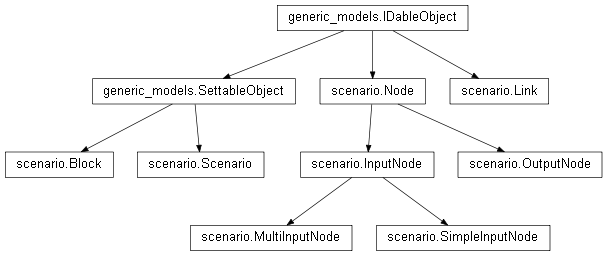

scenario¶

API¶
- class scenario.Scenario(kernel, next_block_id=0, next_link_id=0, *args, **kwargs)¶
Bases: generic_models.SettableObject
Within Majordom, Scenarios are used to implement the automatic behaviors of Majordom.
A scenario is a model of automatic behavior: we chose to represent automatic behaviors with blocks which hace specific input and output nodes. Links can be drawn between these nodes. Once the scenario edition has been completed, the scenario can be activated and the system will behave accordingly to the way it was programmed.
There are three main kinds of blocks: the actions, the infos and the (processing) blocks.
- Actions only have inputs: one trigger and all the inputs corresponding to their execution arguments.
- Informations only have a single output: it is the value of the information. The output node of an information if refreshed every time the information node is refreshed.
- Blocks may have inputs and outputs. The value of their outputs are evaluated depending on the value of their inputs and the processing method implemented within the block. Blocks are written in Python, following a very simple programmation interface described below.
You can add as many blocks as you want in a scenario. Then, link their nodes with Links. When the scenario is activated, every Link of the scenario is consequently activated. When a Link is activated, it creates an observer-pattern relationship between the two linked nodes. This way, when the value of the source node of the link changes, the destination link knows about it and subsequently updates its own value. This mecanism ensures the propagation of the change of any of the system’s inputs.
- settings_format = [{'desc': 'Name of the scenario', 'type': 'string', 'key': 'name', 'title': 'Name'}, {'desc': 'Description of the scenario', 'type': 'string_long', 'key': 'description', 'title': 'Description'}]¶
- get_block(searched_id)¶
Returns the block whose id is the searched_id. If this id is not found, it returns False.
- get_link(searched_id)¶
Returns the link whose id is the searched_id. If this id is not found, it returns False.
- get_node(searched_id)¶
(Internal) Returns the node whose id is the searched_id. If this id is not found, it returns False.
- add_action(action_id)¶
- add_info(info_id)¶
- add_block(block_model_id, settings, block_id=None)¶
Adds the block given as argument to the scenario and returns its ID within the scenario.
- add_link(src_node_id, dst_node_id, link_id=None)¶
Adds a link from the source port whose id has been given as first argumment to the destination port whose id has been given as second argument.
- remove_block(block_id)¶
Removes the element (block or link) whose ID has been specified from the relevant list of this Scenario and returns the removed element. If the ID is not found, the method returns False.
- remove_link(link_id)¶
Removes the link whose ID has been specified from the list of links of this Scenario and returns the Link. If the ID is not found, the method returns False.
- activate()¶
Activates this scenario, i.e. the links between ports of blocks become active: they are translated into observer-observed relationships.
- deactivate()¶
Deactivates this scenario, i. e. deletes all the observer-observed relationships previously set.
- class scenario.Block(block_id, *args, **kwargs)¶
Bases: generic_models.SettableObject
The Block class defines the minimum interface that any Block should implement.
The purpose of the blocks are highlighted in the scenario.Scenario class documentation.
- settings_format = [{'disabled': True, 'desc': 'Name of the block', 'type': 'string', 'key': 'name', 'title': 'Name'}]¶
- add_nodes(*args)¶
Adds the nodes given as argument to the Block. Note that this function accepts as many arguments as you want, as long as they are all Nodes.
- process(changed_input)¶
(abstract method) This is the method that implements the logic of a block, i.e. that computes the output values of the node according to its inputs. It is triggered every time any of the block’s inputs changes: the input which triggered the change is given as argument.
- before_remove()¶
(abstract method) Method used before a block is removed from the Scenario. Most of the time, this method will be empty. Sometimes, the block may need to delete other objects from Majordom before being removed. For instance, the base_blocks.InfoBlock has to delete its corresponding information before being removed from its scenario.
- class scenario.Link(scenario, src_node, dst_node, link_id)¶
Bases: generic_models.IDableObject
The Links are used to connect nodes within a scenario. Their exact purpose are highlighted in the scenario.Scenario class documentation.
- activate()¶
Activates the link, i.e. initializes the observer-pattern relationship between the source and the destination nodes.
- deactivate()¶
Deactivates the link, i.e. removes the observer-pattern relationship between the source and the destination nodes.
- class scenario.Node(block, node_id, name, value_type)¶
Bases: generic_models.IDableObject
(abstract class) This is the base class for any Node subclass. It implements the minimum interface that any Node subclass should implement.
- multiplicity = 'simple'¶
- get_value()¶
Returns the last value of the node.
- get_values(from_time=0, to_time=None)¶
Returns the values of the node whose timestamps are located between the given arguments from_time and to_time.
- class scenario.OutputNode(*args, **kwargs)¶
Bases: scenario.Node
Implementation of the Node interface for an output node.
- add_next(node)¶
Adds an observer to this node. That is the function called when the scenario is activated.
- remove_next(node)¶
Removes an observer of this node. That is the function called when the scenario is deactivated.
- add_value(new_value)¶
Adds a value to the node and subsequently updates all the observers of the node.
- get_value()¶
Returns the last value of the node.
- get_values(from_time=0, to_time=None)¶
Returns the values of the node whose timestamps are located between the given arguments from_time and to_time.
- class scenario.InputNode(*args, **kwargs)¶
Bases: scenario.Node
(abstract class) Base class for any input node.
- update()¶
- class scenario.SimpleInputNode(*args, **kwargs)¶
Bases: scenario.InputNode
Implementation of the InputNode interface in the case of an input node which only accepts a single link. A single link has this kind of node as destination.
- add_previous(node)¶
Adds an observed node to this node. SingleInputNodes can only have a single observed node.
- remove_previous(node)¶
Removes an observed node from this node.
- get_value()¶
Returns the last value of the node.
- get_values(from_time, to_time)¶
Returns the values of the node whose timestamps are located between the given arguments from_time and to_time.
- class scenario.MultiInputNode(*args, **kwargs)¶
Bases: scenario.InputNode
Implementation of the InputNode interface in the case of an input node which accepts several links. Several links may have this node as destination node. It may be used for blocks such as ‘Logical And’: you have no reason to limit the number of values of which you compute the logical and.
- multiplicity = 'multiple'¶
- add_previous(node)¶
Adds an observed node to this node. MultiInputNodes can have several observed nodes.
- remove_previous(node)¶
Removes an observed node from this node.
- get_value()¶
Returns the last value of the node.
- get_values(from_time, to_time)¶
Returns the values of the node whose timestamps are located between the given arguments from_time and to_time.